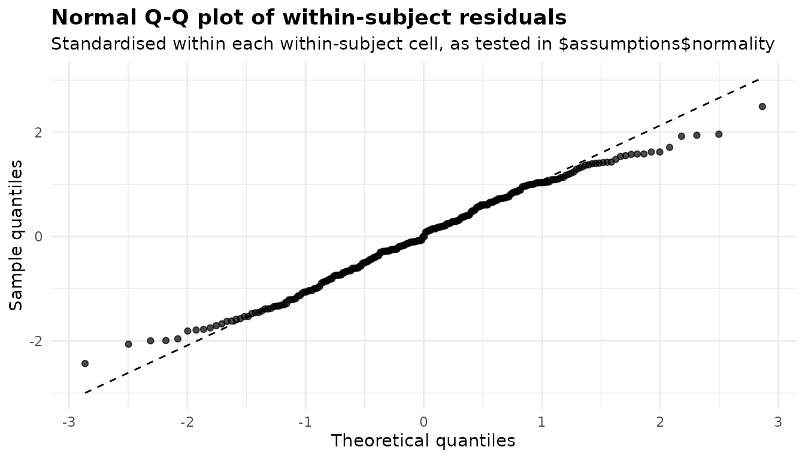
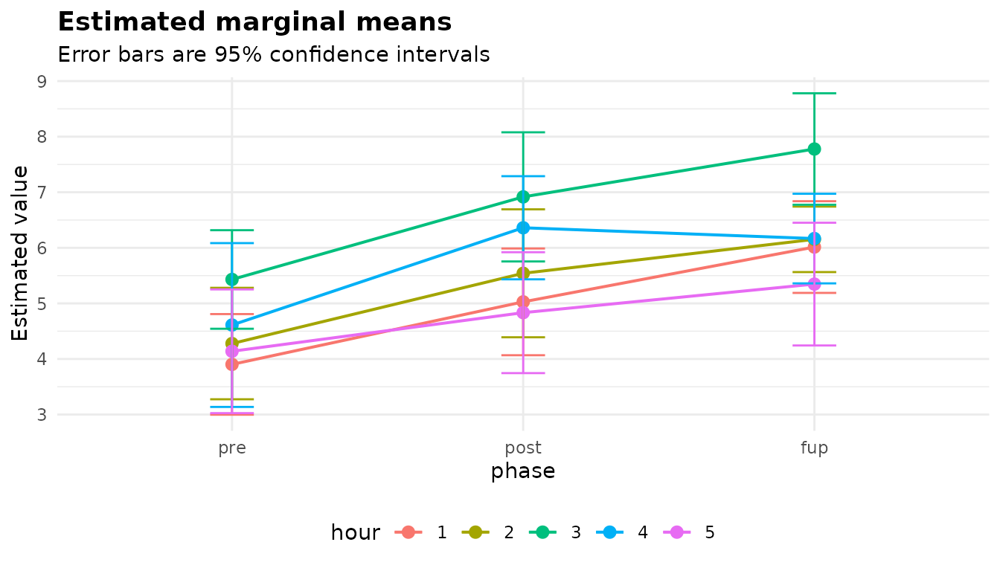
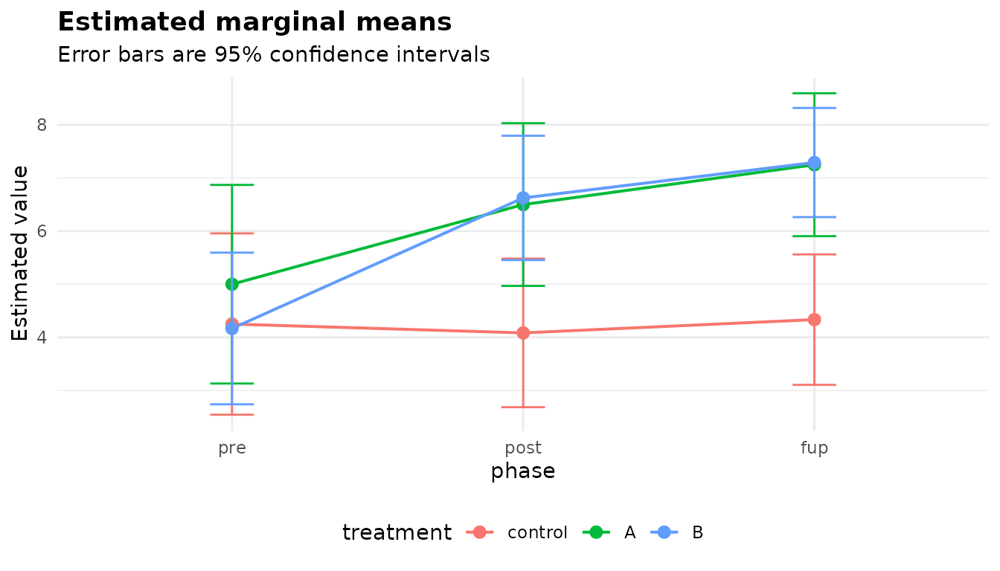

Repeated measures ANOVA: the same subjects under several conditions
Source:vignettes/articles/repeated-measures.Rmd
repeated-measures.Rmdanova_rm() fits a repeated measures ANOVA, in which
every subject is measured in every cell of one or more
within-subject factors, optionally with
between-subject factors that split the subjects into groups. It
takes data in long format (one row per subject per cell), fits the model
with afex::aov_ez() and so needs the afex package. If each
subject contributes a single observation, the groups are independent and
anova_welch() or anova_glm() is the right
tool; for a before-and-after design where the question is about the
“after”, anova_ancova() with the baseline as a covariate is
often better. The decision guide has
more.
The data
afex::obk.long is the long form of a contrived data set
from O’Brien and Kaiser (1985): 16 subjects in three treatments
(control, A, B), of both genders,
each measured at a pre-test, a post-test and a follow-up
(phase), five times an hour apart within each session
(hour). So there are two between-subject factors and two
within-subject factors, 3 x 5 = 15 cells per subject and 16 x 15 = 240
rows. The phases are stored in alphabetical order; putting them in time
order makes every table easier to read.
obk <- afex::obk.long
obk$phase <- factor(obk$phase, levels = c("pre", "post", "fup"))
head(obk)
#> id treatment gender age phase hour value
#> 1 1 control M -4.75 pre 1 1
#> 2 1 control M -4.75 pre 2 2
#> 3 1 control M -4.75 pre 3 4
#> 4 1 control M -4.75 pre 4 2
#> 5 1 control M -4.75 pre 5 1
#> 6 1 control M -4.75 post 1 3
nrow(obk)
#> [1] 240
# subjects in each between-subject cell
with(obk[!duplicated(obk$id), ], table(treatment, gender))
#> gender
#> treatment F M
#> control 2 3
#> A 2 2
#> B 4 3
round(with(obk, tapply(value, list(treatment, phase), mean)), 2)
#> pre post fup
#> control 4.20 4.00 4.40
#> A 5.00 6.50 7.25
#> B 4.14 6.57 7.29The control group barely changes across the phases, while both treatments rise after the pre-test. A repeated measures ANOVA tests effects like that against the variation within subjects, which is usually much smaller than the variation between them.
Fitting the model
Every column is named as a string. subject identifies
the subject, within lists the within-subject factors, and
between the between-subject factors, each of which must
take one value per subject (the function checks).
fit <- anova_rm(obk, "value", subject = "id", within = c("phase", "hour"),
between = c("treatment", "gender"))
fit
#> Repeated measures analysis of variance
#> --------------------------------------
#> Call: anova_rm(data = obk, response = "value", subject = "id", within = c("phase", "hour"), between = c("treatment", "gender"))
#> Observations used: 240
#>
#> Omnibus test (Type III, F, GG-corrected degrees of freedom)
#> term num_df den_df mse statistic partial_eta_sq
#> 1 treatment 2.000 10.00 22.810 3.94000 0.44070
#> 2 gender 1.000 10.00 22.810 3.65900 0.26790
#> 3 treatment:gender 2.000 10.00 22.810 2.85500 0.36350
#> 4 phase 1.599 15.99 5.020 16.13000 0.61730
#> 5 treatment:phase 3.198 15.99 5.020 4.85100 0.49240
#> 6 gender:phase 1.599 15.99 5.020 0.28280 0.02750
#> 7 treatment:gender:phase 3.198 15.99 5.020 0.63660 0.11290
#> 8 hour 1.841 18.41 3.395 16.69000 0.62530
#> 9 treatment:hour 3.682 18.41 3.395 0.09333 0.01832
#> 10 gender:hour 1.841 18.41 3.395 0.45030 0.04309
#> 11 treatment:gender:hour 3.682 18.41 3.395 0.62040 0.11040
#> 12 phase:hour 3.596 35.96 2.674 1.18000 0.10550
#> 13 treatment:phase:hour 7.192 35.96 2.674 0.34530 0.06460
#> 14 gender:phase:hour 3.596 35.96 2.674 0.93130 0.08520
#> 15 treatment:gender:phase:hour 7.192 35.96 2.674 0.73590 0.12830
#> p_value
#> 1 0.0547069
#> 2 0.0848003
#> 3 0.1044692
#> 4 0.0002814
#> 5 0.0126909
#> 6 0.7089599
#> 7 0.6116209
#> 8 9.763e-05
#> 9 0.9786227
#> 10 0.6284344
#> 11 0.6413625
#> 12 0.3345212
#> 13 0.9303725
#> 14 0.4490777
#> 15 0.6463449
#>
#> Notes
#> - Mauchly's test rejects sphericity for hour, treatment:hour, gender:hour, treatment:gender:hour; the reported table uses the Greenhouse-Geisser correction.
#> - The marginal means in $emmeans and the comparisons in $posthoc are averaged over the levels of: treatment, gender. The ANOVA table shows a significant interaction with a factor averaged over (treatment:phase, p = 0.0127), so these averages can hide or reverse the differences within its levels; set emm_specs = c("phase", "hour", "treatment", "gender") to compare the cells.
#>
#> Plots available: residuals, qq, index, emmeans
#> (use plot(x, which = "residuals"))Reading the printout:
- The heading of the table says the sums of squares are Type III, the
statistic is F, and the degrees of freedom are Greenhouse-Geisser
corrected (the default
correction = "GG"). -
Observations used: 240: every subject has every cell, so nothing was removed. An incomplete subject would be dropped and named in the notes (below). - The table has a row for every term of the full factorial model, 15 in all.
- Two notes: which terms failed Mauchly’s test, and a warning that the default marginal means average over a factor that interacts with a factor they show.
- Four plots are available.
summary(fit) adds the assumption checks, effect sizes,
marginal means, comparisons and the sphericity table.
The omnibus test
print(fit$anova, digits = 3)
#> term num_df den_df mse statistic partial_eta_sq
#> 1 treatment 2.00 10.0 22.81 3.9405 0.4407
#> 2 gender 1.00 10.0 22.81 3.6591 0.2679
#> 3 treatment:gender 2.00 10.0 22.81 2.8555 0.3635
#> 4 phase 1.60 16.0 5.02 16.1329 0.6173
#> 5 treatment:phase 3.20 16.0 5.02 4.8510 0.4924
#> 6 gender:phase 1.60 16.0 5.02 0.2828 0.0275
#> 7 treatment:gender:phase 3.20 16.0 5.02 0.6366 0.1129
#> 8 hour 1.84 18.4 3.39 16.6857 0.6253
#> 9 treatment:hour 3.68 18.4 3.39 0.0933 0.0183
#> 10 gender:hour 1.84 18.4 3.39 0.4503 0.0431
#> 11 treatment:gender:hour 3.68 18.4 3.39 0.6204 0.1104
#> 12 phase:hour 3.60 36.0 2.67 1.1799 0.1055
#> 13 treatment:phase:hour 7.19 36.0 2.67 0.3453 0.0646
#> 14 gender:phase:hour 3.60 36.0 2.67 0.9313 0.0852
#> 15 treatment:gender:phase:hour 7.19 36.0 2.67 0.7359 0.1283
#> p_value
#> 1 5.47e-02
#> 2 8.48e-02
#> 3 1.04e-01
#> 4 2.81e-04
#> 5 1.27e-02
#> 6 7.09e-01
#> 7 6.12e-01
#> 8 9.76e-05
#> 9 9.79e-01
#> 10 6.28e-01
#> 11 6.41e-01
#> 12 3.35e-01
#> 13 9.30e-01
#> 14 4.49e-01
#> 15 6.46e-01-
num_dfandden_dfare the numerator and denominator degrees of freedom. For a term that involves a within-subject factor they have been multiplied by the Greenhouse-Geisser epsilon, which is why they are not whole numbers. The between-subject terms (treatment,genderand their interaction) need no correction. -
mseis the mean square of the error term the effect is tested against: between-subject terms against the variation between subjects, within-subject terms against their own subject-by-term interaction. -
statisticis F,partial_eta_sqis the partial eta squared, andp_valueis computed on the corrected degrees of freedom.
phase (p < 0.001) and hour (p <
0.001) are clear, and so is the treatment:phase interaction
(p = 0.013): the treatments differ in how the scores change across the
phases, as the table of means suggested. The type and correction are
stored as attributes of the table:
Sphericity
A within-subject F test assumes sphericity: that the differences between every pair of levels of a within-subject factor have the same variance. When the assumption fails the F test rejects too often. The usual remedy is to shrink both degrees of freedom by an estimate of epsilon, which is 1 under sphericity and as low as 1/(k - 1) for a factor with k levels.
print(fit$sphericity, digits = 3)
#> term mauchly_w p_value gg_epsilon hf_epsilon p_gg
#> 1 phase 0.74927 0.2728 0.80 0.928 2.81e-04
#> 2 treatment:phase 0.74927 0.2728 0.80 0.928 1.27e-02
#> 3 gender:phase 0.74927 0.2728 0.80 0.928 7.09e-01
#> 4 treatment:gender:phase 0.74927 0.2728 0.80 0.928 6.12e-01
#> 5 hour 0.06607 0.0076 0.46 0.559 9.76e-05
#> 6 treatment:hour 0.06607 0.0076 0.46 0.559 9.79e-01
#> 7 gender:hour 0.06607 0.0076 0.46 0.559 6.28e-01
#> 8 treatment:gender:hour 0.06607 0.0076 0.46 0.559 6.41e-01
#> 9 phase:hour 0.00478 0.4494 0.45 0.733 3.35e-01
#> 10 treatment:phase:hour 0.00478 0.4494 0.45 0.733 9.30e-01
#> 11 gender:phase:hour 0.00478 0.4494 0.45 0.733 4.49e-01
#> 12 treatment:gender:phase:hour 0.00478 0.4494 0.45 0.733 6.46e-01
#> p_hf hf_epsilon_raw
#> 1 0.000112 0.928
#> 2 0.008439 0.928
#> 3 0.740857 0.928
#> 4 0.631998 0.928
#> 5 0.000023 0.559
#> 6 0.988662 0.559
#> 7 0.664554 0.559
#> 8 0.669298 0.559
#> 9 0.329659 0.733
#> 10 0.975225 0.733
#> 11 0.478034 0.733
#> 12 0.708012 0.733There is one row per within-subject term with more than one degree of
freedom (a two-level factor has nothing to test; see below). Terms that share the same
within-subject factors share the same error matrix, so
treatment:hour, gender:hour and
hour have the same Mauchly’s test and the same
epsilons.
-
mauchly_wandp_valueare Mauchly’s test. It rejects forhour(p = 0.0076) and its interactions, and not forphase(p = 0.27). -
gg_epsilonis the Greenhouse-Geisser estimate (0.46 forhour), andhf_epsilonthe Huynh-Feldt estimate with Lecoutre’s correction (0.559), capped at 1.hf_epsilon_rawis the uncapped value; the two differ only when the estimate exceeds 1, and a note then says so. -
p_ggandp_hfare each term’s p-value under each correction, so you can see both whichever one$anovauses.
The correction argument chooses what $anova
reports: "GG" (the default), "HF" or
"none".
hf <- anova_rm(obk, "value", subject = "id", within = c("phase", "hour"),
between = c("treatment", "gender"), correction = "HF",
plots = FALSE)
none <- anova_rm(obk, "value", subject = "id", within = c("phase", "hour"),
between = c("treatment", "gender"), correction = "none",
plots = FALSE)
rows <- fit$anova$term %in% c("phase", "hour")
data.frame(term = fit$anova$term[rows],
df_GG = fit$anova$num_df[rows], p_GG = fit$anova$p_value[rows],
df_HF = hf$anova$num_df[rows], p_HF = hf$anova$p_value[rows],
df_none = none$anova$num_df[rows], p_none = none$anova$p_value[rows])
#> term df_GG p_GG df_HF p_HF df_none p_none
#> 1 phase 1.599070 2.813681e-04 1.855719 1.124743e-04 2 6.731637e-05
#> 2 hour 1.841126 9.762881e-05 2.237121 2.300914e-05 4 4.026643e-08
none$notes[1]
#> [1] "Mauchly's test rejects sphericity for hour, treatment:hour, gender:hour, treatment:gender:hour; the reported table is uncorrected (correction = \"none\"), so its p-values for those terms may be too small."Greenhouse-Geisser is the conservative choice and Huynh-Feldt the
less conservative one; with no correction the p-values for
hour are the smallest of the three, and the note warns that
they may be too small. A common rule is to use Huynh-Feldt when the
Greenhouse-Geisser epsilon is above about 0.75 and Greenhouse-Geisser
otherwise, but deciding in advance, rather than after seeing the
p-values, matters more than which you pick. Mauchly’s test has little
power in small samples, so a non-significant result is weak reassurance;
correcting by default costs little.
The same table is in fit$assumptions$sphericity. When
there are fewer subjects than a term has contrasts, Mauchly’s test is
undefined; the epsilons are then computed directly and a note says
so.
Effect sizes
print(fit$effect_sizes, digits = 3)
#> term partial_eta_sq generalised_eta_sq
#> 1 treatment 0.4407 0.27791
#> 2 gender 0.2679 0.15160
#> 3 treatment:gender 0.3635 0.21807
#> 4 phase 0.6173 0.21711
#> 5 treatment:phase 0.4924 0.14294
#> 6 gender:phase 0.0275 0.00484
#> 7 treatment:gender:phase 0.1129 0.02142
#> 8 hour 0.6253 0.18255
#> 9 treatment:hour 0.0183 0.00249
#> 10 gender:hour 0.0431 0.00599
#> 11 treatment:gender:hour 0.1104 0.01634
#> 12 phase:hour 0.1055 0.02372
#> 13 treatment:phase:hour 0.0646 0.01402
#> 14 gender:phase:hour 0.0852 0.01882
#> 15 treatment:gender:phase:hour 0.1283 0.02942partial_eta_sq is the effect’s sum of squares over
itself plus its own error sum of squares. In a repeated measures design
each within-subject term has its own, relatively small, error term, so
partial eta squared for those terms is large and not comparable with the
same effect measured in a between-subjects design.
generalised_eta_sq (Olejnik and Algina, 2003) puts the
subject variation back into the denominator, so it is comparable across
designs, and it is the measure to report when you want to compare with
other studies. Neither has an interval.
Generalised eta squared depends on which factors were
manipulated and which were merely observed. By default
every factor is treated as manipulated. Gender was not assigned by the
experimenter, so it belongs in observed (passed on to
afex):
obs <- anova_rm(obk, "value", subject = "id", within = c("phase", "hour"),
between = c("treatment", "gender"), observed = "gender",
plots = FALSE)
data.frame(term = fit$effect_sizes$term,
ges_default = fit$effect_sizes$generalised_eta_sq,
ges_observed = obs$effect_sizes$generalised_eta_sq)[1:8, ]
#> term ges_default ges_observed
#> 1 treatment 0.277906143 0.198248507
#> 2 gender 0.151600576 0.114806411
#> 3 treatment:gender 0.218071465 0.179183259
#> 4 phase 0.217114834 0.151232706
#> 5 treatment:phase 0.142938795 0.096782387
#> 6 gender:phase 0.004837544 0.003123177
#> 7 treatment:gender:phase 0.021417761 0.014061848
#> 8 hour 0.182545245 0.125471836
attr(obs$effect_sizes, "observed")
#> [1] "gender"Every generalised eta squared shrinks, because the variation gender accounts for now counts as part of the individual differences in the denominator. Partial eta squared, the F tests and the p-values do not change.
Marginal means and comparisons
By default $emmeans holds the marginal means of the
within-subject cells, here the 15 combinations of phase and hour,
averaged over the between-subject factors:
head(fit$emmeans)
#> phase hour estimate se df conf_low conf_high
#> 1 pre 1 3.902778 0.4062352 10 2.997629 4.807926
#> 2 post 1 5.027778 0.4309586 10 4.067542 5.988013
#> 3 fup 1 6.013889 0.3702112 10 5.189007 6.838771
#> 4 pre 2 4.277778 0.4500086 10 3.275096 5.280459
#> 5 post 2 5.541667 0.5165659 10 4.390686 6.692647
#> 6 fup 2 6.152778 0.2644366 10 5.563576 6.741979
nrow(fit$posthoc)
#> [1] 105
attr(fit$emmeans, "emmeans_model")
#> [1] "multivariate"They come from afex’s multivariate model, so each cell’s
standard error and degrees of freedom come from that cell’s own
variance, not from a pooled error term (df is the number of
subjects minus the number of between-subject cells, 10). The
emmeans_model attribute records this.
The second note of the fit warns that averaging over
treatment is risky here, because
treatment:phase is significant: the average change across
phases hides the fact that the control group does not change.
emm_specs chooses the factors the means are computed over.
Asking for phase by treatment, averaged over hour and gender:
tp <- anova_rm(obk, "value", subject = "id", within = c("phase", "hour"),
between = c("treatment", "gender"),
emm_specs = c("phase", "treatment"))
print(tp$emmeans, digits = 3)
#> phase treatment estimate se df conf_low conf_high
#> 1 pre control 4.25 0.766 10 2.54 5.96
#> 2 post control 4.08 0.628 10 2.68 5.48
#> 3 fup control 4.33 0.551 10 3.11 5.56
#> 4 pre A 5.00 0.839 10 3.13 6.87
#> 5 post A 6.50 0.688 10 4.97 8.03
#> 6 fup A 7.25 0.604 10 5.90 8.60
#> 7 pre B 4.17 0.641 10 2.74 5.59
#> 8 post B 6.62 0.525 10 5.45 7.80
#> 9 fup B 7.29 0.461 10 6.26 8.32The comparisons now cover all 36 pairs of the nine cells. Those within a treatment across phases are usually the ones of interest:
ph <- tp$posthoc
within_trt <- c("pre control - fup control", "pre A - fup A", "pre B - fup B")
print(ph[ph$contrast %in% within_trt,
c("contrast", "estimate", "conf_low", "conf_high", "p_value",
"p_adjusted")], digits = 3)
#> contrast estimate conf_low conf_high p_value p_adjusted
#> 2 pre control - fup control -0.0833 -2.05 1.8805 8.73e-01 1.000000
#> 23 pre A - fup A -2.2500 -4.40 -0.0988 2.37e-03 0.038655
#> 35 pre B - fup B -3.1250 -4.77 -1.4820 2.47e-05 0.000511
tp$notes[2]
#> [1] "The marginal means in $emmeans and the comparisons in $posthoc are averaged over the levels of: hour, gender."p_value is unadjusted and p_adjusted is
adjusted by the method in the adjustment column (Tukey by
default, across all 36 comparisons, which is conservative when you only
care about three of them). adjust chooses another method
for the whole family. If you planned only a few comparisons, take their
unadjusted p_values and adjust them among themselves with
p.adjust(). The note confirms which factors were averaged
over.
When you need a contrast the wrapper does not compute – say, the
change from pre to follow-up compared between treatments –
$emmeans_object is the emmeans grid with your factor names
and labels, ready for emmeans::contrast().
Checking assumptions
Two assumptions matter: sphericity, covered above, and normality of the within-subject errors.
print(fit$assumptions$normality, digits = 3)
#> cell n statistic p_value note
#> 1 pre : 1 16 0.979 0.9514 <NA>
#> 2 pre : 2 16 0.962 0.7067 <NA>
#> 3 pre : 3 16 0.954 0.5594 <NA>
#> 4 pre : 4 16 0.953 0.5427 <NA>
#> 5 pre : 5 16 0.888 0.0511 <NA>
#> 6 post : 1 16 0.962 0.6984 <NA>
#> 7 post : 2 16 0.988 0.9969 <NA>
#> 8 post : 3 16 0.939 0.3429 <NA>
#> 9 post : 4 16 0.979 0.9552 <NA>
#> 10 post : 5 16 0.952 0.5272 <NA>
#> 11 fup : 1 16 0.945 0.4163 <NA>
#> 12 fup : 2 16 0.953 0.5399 <NA>
#> 13 fup : 3 16 0.950 0.4942 <NA>
#> 14 fup : 4 16 0.957 0.6016 <NA>
#> 15 fup : 5 16 0.937 0.3194 <NA>The within-subject F tests depend on what is left of each value once
its subject’s mean and its cell’s mean (within its between-subject
group) are removed. Those residuals are fit$residuals, one
per row of $data_used and in the same order, and
Shapiro-Wilk is run on them separately for each within-subject cell.
Pooling them would mix cells of different spread, which can fail a
normality test even when every cell is normal. Here no cell rejects at
the 5% level; the smallest p-value is 0.051, in the pre : 5 cell. With
15 tests, one or two small p-values are expected by chance, so look for
a pattern rather than a single cell. A cell that cannot be tested (fewer
than three subjects, or no variation) gets an NA p-value
and the reason in the note column.
head(cbind(fit$data_used, residual = round(fit$residuals, 3)))
#> value id phase hour treatment gender residual
#> 1 1 1 pre 1 control M -0.889
#> 2 2 1 pre 2 control M -0.556
#> 3 4 1 pre 3 control M 0.778
#> 4 2 1 pre 4 control M -0.556
#> 5 1 1 pre 5 control M -1.556
#> 6 3 1 post 1 control M 1.444The normality of the subject means, which the between-subject tests rely on, is not tested. The diagnostics article covers the checks across the package.
Plots
Each plot is a ggplot2 object; plot(fit, "name") returns
it for you to print or modify (see Plots and
visual customisation).
Residuals against fitted values
plot(fit, "residuals")
The residuals and fitted values are the within-subject ones described above (a fitted value is the observed value minus its residual). What to look for: the same even band as in any residual plot, with no funnel. The values in this data set are whole numbers on a short scale, which is why the points line up along diagonal stripes.
Normal Q-Q plot
plot(fit, "qq")
The residuals here are standardised within each within-subject cell,
as they are tested in $assumptions$normality, so cells with
different spreads are put on the same footing. What to look for: points
along the dashed line, with no systematic curve at the ends. Here both
ends bend in towards the middle: the residuals have lighter tails than a
normal distribution, which is common for whole-number scores on a short
scale and is generally harmless for the F tests. Heavy tails, bending
away from the line, would be the worrying pattern.
Residuals in row order
plot(fit, "index")
The residuals in the row order of $data_used, which is
the order the rows came in (here, 15 consecutive rows per subject). What
to look for: no trends, and no runs of residuals on the same side of
zero. A drift within each block of rows would suggest practice or
fatigue effects that the model does not capture; if your data are sorted
by time of testing, this is where a drift over the course of the study
would show. Nothing of the kind is visible here.
Marginal means
plot(fit, "emmeans")
plot(tp, "emmeans")
The first factor in emm_specs goes on the x axis and any
others are mapped to colour, with one line per level. In the first plot
(the default, phase by hour) the pre-test is the lowest phase at every
hour and the third hour is the highest in every phase. The second, phase
by treatment, shows the control group staying flat while A
and B rise, which is the treatment:phase
interaction.
Incomplete designs
A repeated measures ANOVA needs every subject in every within-subject
cell. datasets::ChickWeight records the weights of 50
chicks on four diets, every two days from birth to day 20 and on day 21.
Some chicks died or were not weighed on every day:
cw <- as.data.frame(datasets::ChickWeight)
table(table(cw$Chick)) # rows per chick: most have all 12
#>
#> 2 7 8 10 11 12
#> 1 1 1 1 1 45Time is numeric; like every within-subject column it is
turned into a factor, so each day is a level.
chick <- anova_rm(cw, "weight", subject = "Chick", within = "Time",
between = "Diet", plots = FALSE)
chick$subjects_dropped
#> [1] "18" "16" "15" "8" "44"
c(n_removed = chick$n_removed,
missing = chick$n_removed_missing,
unbalanced = chick$n_removed_unbalanced,
aggregated = chick$n_removed_aggregated)
#> n_removed missing unbalanced aggregated
#> 38 0 38 0
chick$notes[1]
#> [1] "5 subject(s) were removed because they are missing at least one within-subject cell: 18, 16, 15, 8, 44. A repeated measures ANOVA requires a complete design."Five chicks without a full set of weighings were removed before
fitting, and they are listed in $subjects_dropped in the
order of the subject column’s levels (Chick is an ordered
factor, which is why they are not in numeric order).
$n_removed counts every input row that is not in
$data_used, and three components break it down by cause:
rows with a missing value, rows belonging to incomplete subjects, and
rows combined by aggregation (next section). Here all 38 removed rows
belong to incomplete subjects.
A missing value costs more than its own row. Setting one weight to
NA:
cw_na <- cw
cw_na$weight[cw_na$Chick == "1" & cw_na$Time == 10] <- NA
chick_na <- anova_rm(cw_na, "weight", subject = "Chick", within = "Time",
between = "Diet", plots = FALSE)
c(n_removed = chick_na$n_removed,
missing = chick_na$n_removed_missing,
unbalanced = chick_na$n_removed_unbalanced)
#> n_removed missing unbalanced
#> 50 1 49
chick_na$subjects_dropped
#> [1] "18" "16" "15" "8" "1" "44"The row with the missing weight is dropped, which leaves chick 1
without a day-10 weighing, so its other 11 rows go too.
nrow(data_used) + n_removed is always the number of rows
supplied. If losing whole subjects is too costly, a mixed model (for
example with lme4 or afex’s mixed()) can use incomplete
subjects; anova_rm() cannot.
These growth data also show how badly sphericity can fail: weights spread out as chicks grow, so the variance of the differences grows with the gap between days.
print(chick$sphericity[, c("term", "mauchly_w", "p_value", "gg_epsilon",
"hf_epsilon")], digits = 3)
#> term mauchly_w p_value gg_epsilon hf_epsilon
#> 1 Time 2.68e-17 1.03e-251 0.114 0.116
#> 2 Diet:Time 2.68e-17 1.03e-251 0.114 0.116A Greenhouse-Geisser epsilon of 0.11 is close to its minimum of 1/11 for a 12-level factor: the corrected test has barely more degrees of freedom than a single comparison.
Internal names
afex builds a model formula from column names and names its
wide-format columns after the within-subject levels, so a column called
subject id or levels such as 0, 2, 4 would be
mangled. anova_rm() therefore gives afex internal names and
labels, and maps every table and plot back to yours. $model
is the afex fit itself and keeps the internal names;
$internal_names gives the correspondence:
chick$internal_names
#> role name internal
#> 1 response weight Y
#> 2 subject Chick ID
#> 3 within Time W1
#> 4 between Diet B1
head(chick$model$data$long, 3)
#> ID B1 W1 Y
#> 1 S01 L1 L01 41
#> 2 S01 L1 L02 48
#> 3 S01 L1 L03 53The day levels 0, 2, 4, … are L01, L02,
L03, … in $model, in level order. You only
need this table if you work with $model directly.
Repeated rows: fun_aggregate
Sometimes a subject has several rows in the same cell: several trials
per condition, or, if you leave a factor out of the analysis, the rows
it used to distinguish. Analysing obk by phase alone leaves
five rows (the hours) per subject and phase. They are combined into one
value before fitting, with the mean by default:
by_phase <- anova_rm(obk, "value", subject = "id", within = "phase",
between = "treatment", plots = FALSE)
by_phase$notes[1]
#> [1] "48 subject-by-cell combination(s) have more than one row (192 extra row(s)); each was aggregated into one value with the mean (the default; pass fun_aggregate to choose another function) before fitting. $data_used holds the aggregated rows, and the 192 row(s) aggregated away are included in $n_removed."
c(used = nrow(by_phase$data_used), removed = by_phase$n_removed,
aggregated = by_phase$n_removed_aggregated)
#> used removed aggregated
#> 48 192 192
head(by_phase$data_used, 3)
#> value id phase treatment
#> 1 2 1 pre control
#> 2 3 1 post control
#> 3 3 1 fup control$data_used holds the aggregated rows (one per subject
and phase), and the 192 rows combined away are counted in
$n_removed and $n_removed_aggregated. Pass
fun_aggregate to use another function, for example the
median for skewed trial-level data:
by_phase_md <- anova_rm(obk, "value", subject = "id", within = "phase",
between = "treatment", fun_aggregate = median,
plots = FALSE)
by_phase_md$notes[1]
#> [1] "48 subject-by-cell combination(s) have more than one row (192 extra row(s)); each was aggregated into one value with `median` before fitting. $data_used holds the aggregated rows, and the 192 row(s) aggregated away are included in $n_removed."
all.equal(by_phase_md$data_used$value, by_phase$data_used$value)
#> [1] TRUEIn these contrived data the median and the mean of each subject’s
five hourly values happen to coincide, so the result is the same; the
note records the function either way. Aggregation is a convenience: if
the repeated rows are a design factor, like hour, it is
usually better to keep it in within.
A within-only design
between is optional. datasets::sleep gives
the extra hours of sleep of ten patients under two drugs
(group), each patient taking both, so group is
a within-subject factor and ID the subject:
sl <- anova_rm(datasets::sleep, "extra", subject = "ID", within = "group")
sl
#> Repeated measures analysis of variance
#> --------------------------------------
#> Call: anova_rm(data = datasets::sleep, response = "extra", subject = "ID", within = "group")
#> Observations used: 20
#>
#> Omnibus test (Type III, F, no sphericity correction)
#> term num_df den_df mse statistic partial_eta_sq p_value
#> 1 group 1 9 0.7564 16.5 0.6471 0.002833
#>
#> Notes
#> - Sphericity is not an issue for this design: every within-subject factor has two levels, where the assumption holds automatically.
#>
#> Plots available: residuals, qq, index, emmeans
#> (use plot(x, which = "residuals"))With a two-level factor there is only one difference per subject, so
sphericity holds automatically: $sphericity is
NULL and the note says why. The heading of the table says
“no sphericity correction”, and
attr(sl$anova, "correction") is “none”, even though
correction was left at its default: there is nothing to
correct, and the degrees of freedom are the uncorrected 1 and 9. The
ANOVA is then the paired t-test in another form, with F =
t2:
d <- with(datasets::sleep, extra[group == "2"] - extra[group == "1"])
tt <- t.test(d)
c(t_squared = unname(tt$statistic)^2, F = sl$anova$statistic,
p_t = tt$p.value, p_F = sl$anova$p_value)
#> t_squared F p_t p_F
#> 16.50088132 16.50088132 0.00283289 0.00283289The same equivalence holds for the normality check. With one
two-level within-subject factor, the residuals are plus and minus half
of each subject’s centred difference, so both rows of
$assumptions$normality test the normality of the
differences, which is exactly the assumption of the paired t-test:
sl$assumptions$normality
#> cell n statistic p_value note
#> 1 1 10 0.8298713 0.03334161 <NA>
#> 2 2 10 0.8298713 0.03334161 <NA>
shapiro.test(d)$p.value
#> [1] 0.03334161Both rows give p = 0.033: the differences are not convincingly normal, because one patient’s difference (4.6 hours) is far larger than the others (without that patient, Shapiro-Wilk gives p = 0.77). Ten subjects is too few to lean on the test, but it is a reason to check the result with a nonparametric paired test.
Options worth knowing
-
correction("GG","HF","none"), shown above. -
emm_specs, shown above. When it leaves out a factor of the model, the means are averaged over it and a note says so. -
adjustsets the multiplicity adjustment for$posthoc:"tukey"(the default),"holm","bonferroni","BH"and others;posthoc = FALSEskips the comparisons. -
conf_levelsets the level of every interval. - A few arguments of
afex::aov_ez()pass through...:observed(above),fun_aggregate(above),type = 2for Type II sums of squares, andanova_table = list(p_adjust_method = "holm")to adjust the p-values of$anovaacross its terms. Anything else is an error rather than silently ignored.covariateis refused:anova_rm()does not fit covariates.
t2 <- anova_rm(obk, "value", subject = "id", within = c("phase", "hour"),
between = c("treatment", "gender"), type = 2, plots = FALSE)
attr(t2$anova, "ss_type")
#> [1] "II"
print(t2$anova[1:3, c("term", "statistic", "p_value")], digits = 3)
#> term statistic p_value
#> 1 treatment 4.63 0.0377
#> 2 gender 2.56 0.1410
#> 3 treatment:gender 2.86 0.1045The design here is unbalanced between subjects (two to four subjects
per treatment-by-gender cell), so Type II and Type III tests differ for
most terms. Only the terms that contain both between-subject factors,
such as treatment:gender, are the same under both.
-
factorize = TRUE(the default) converts a response stored as a factor or as text to numbers through its labels, so a factor with levels 11, 17, 21 becomes 11, 17, 21 rather than 1, 2, 3; a note records the conversion.
What the notes say
fit$notes
#> [1] "Mauchly's test rejects sphericity for hour, treatment:hour, gender:hour, treatment:gender:hour; the reported table uses the Greenhouse-Geisser correction."
#> [2] "The marginal means in $emmeans and the comparisons in $posthoc are averaged over the levels of: treatment, gender. The ANOVA table shows a significant interaction with a factor averaged over (treatment:phase, p = 0.0127), so these averages can hide or reverse the differences within its levels; set emm_specs = c(\"phase\", \"hour\", \"treatment\", \"gender\") to compare the cells."- Mauchly’s test rejects sphericity for
hourand the terms involving it, and the table uses the Greenhouse-Geisser correction. The corrected p-values are the ones to report. - The default marginal means average over
treatmentandgender, buttreatment:phaseis significant, so those averages can hide the difference between treatments. The note suggests the full cell grid; a smalleremm_specssuch asc("phase", "treatment"), used above, is often enough.
Other notes you may see: subjects removed for incomplete cells, rows aggregated, a response converted from a factor, epsilons computed directly because the error matrix is singular, a Huynh-Feldt estimate above 1, a design with no error degrees of freedom, and anything afex or emmeans said while the model was being fitted.
Reporting the result
A 3 (treatment) x 2 (gender) x 3 (phase) x 5 (hour) mixed ANOVA was run on the scores, with Type III sums of squares and Greenhouse-Geisser corrected degrees of freedom (Mauchly’s test rejected sphericity for hour, W = 0.07, p = 0.0076; epsilon = 0.46). Scores changed across phases, F(1.60, 15.99) = 16.13, p < 0.001, generalised η2 = 0.22, and across hours, F(1.84, 18.41) = 16.69, p < 0.001, generalised η2 = 0.18. The change across phases depended on treatment, F(3.20, 15.99) = 4.85, p = 0.013, generalised η2 = 0.14: averaged over hour and gender, the control group scored 4.25 at pre-test and 4.33 at follow-up, against 5.00 to 7.25 for treatment A and 4.17 to 7.29 for treatment B.
See also
-
?anova_rmfor every argument, including the details of the sphericity computation and the residuals. -
Working with results for the
anovakit_fitobject and$emmeans_object. -
anova_ancova()(article) for a pre-post design analysed with the baseline as a covariate. -
anova_welch()(article) andanova_kw()(article) for independent groups. - Diagnostics and Plots and visual customisation.
O’Brien, R. G., & Kaiser, M. K. (1985). MANOVA method for analyzing repeated measures designs: An extensive primer. Psychological Bulletin, 97, 316-333.
Olejnik, S., & Algina, J. (2003). Generalized eta and omega squared statistics: measures of effect size for some common research designs. Psychological Methods, 8(4), 434-447.